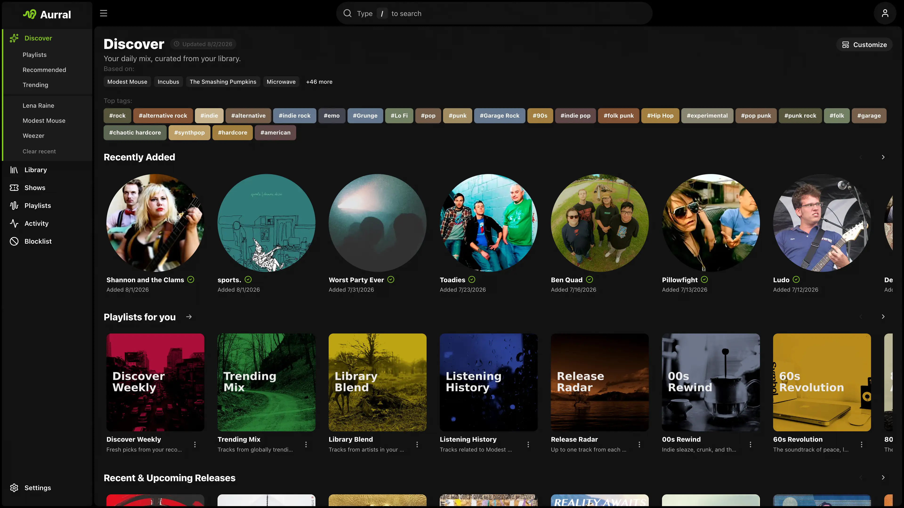
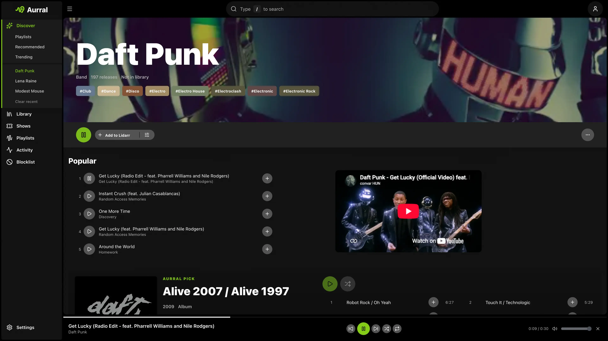
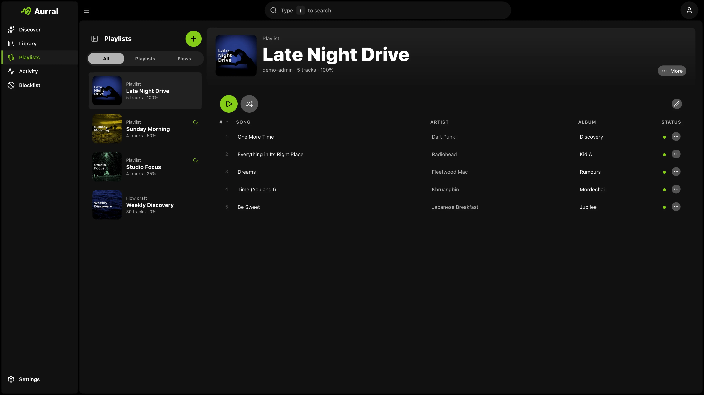

Music discovery,
self-hosted.
The best open-source discovery for your library. Works alone or alongside Lidarr.

People keep installing it. Live numbers, no marketing math.
- GitHub stars
- 1.7K
- Docker pulls
- 1.7M
- Latest release, recently
- v2.10.0
- Integrations
- 17
Recommendations with taste. Built from your library and listening history, not someone's ad budget.
-
Learns from you
Your library plus Last.fm, ListenBrainz, or Koito history.
-
Goes as deep as you want
Safer, balanced, or deeper. More like this, less like that.
-
Knows what's moving
Global trends, tags, and recent releases in one place.
-
Finds the show
Nearby concerts for the artists you already love.

Playlists that refill themselves. Flows mix discovery and your library on a schedule, then fetch the tracks.
-
Rotating flows
Pick the mix, the size, and the days. Aurral does the rest.
-
Release Radar
Adopt discover playlists and keep them fresh every week.
-
Bring your playlists
Import from Spotify, YouTube Music, Last.fm, or ListenBrainz.
-
Play them anywhere
In the browser, or synced to Navidrome, Plex, and Jellyfin.

The rest, done properly. Everything a music server should have had already.
Lidarr optional. Everything else, too. Connect the services you already run and skip the ones you don't.
Library
Playback
Listening
Alerts and shows
Running in a minute. One container, one port.
Mount the same media path that Lidarr uses, run docker compose up -d,
and open port 3001. Lidarr can come later, or never.
services:
aurral:
image: ghcr.io/lklynet/aurral:latest
restart: unless-stopped
ports:
- "3001:3001"
environment:
- PUID=1000
- PGID=1000
volumes:
- ${MEDIA_ROOT:-/srv/media}:/data
- ./config:/configBuilt in public. Better every week.
Free, MIT licensed, and shaped by the people who run it. Sponsors keep it that way.